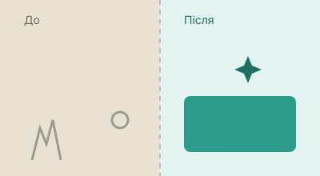

Генеральне прибирання квартири на Озерній (68 м²)
Клієнтка звернулась одразу після завершення ремонту - потрібно було прибрати будівельний пил, відмити вікна, плитку у ванній та кухонний фартух. Робота зайняла бригаду з двох людей близько 5 годин.
- Вивезення будівельного сміття та пакування
- Миття вікон з двох боків
- Видалення будівельного пилу з усіх поверхонь